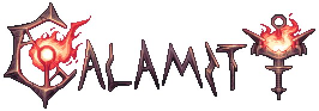

- 本wiki的内容由灾厄维基汉化组
 制作。
制作。 - 本wiki的内容按照CC BY-NC-SA 3.0国际许可协议进行许可。
- BY(署名) — 您必须给出适当的署名，提供指向本许可协议的链接，同时标明是否（对原始作品）作了修改。您可以用任何合理的方式来署名，但是不得以任何方式暗示灾厄中文wiki为您或您的使用背书。
- NC(非商业性使用) — 您不得将本作品用于商业目的，包括用以制作第三方平台上的小程序和应用，关于商业目的的界定，本wiki和托管提供方灰机wiki享有最终解释权。
- SA(相同方式共享) — 如果您再混合、转换或者基于本作品进行创作，您必须基于与原先许可协议相同的许可协议分发您贡献的作品。
- 任何人和第三方未经授权，不得将wiki内容拷贝、转存、引用至商业目的程序或应用之上。如需授权请联系管理。